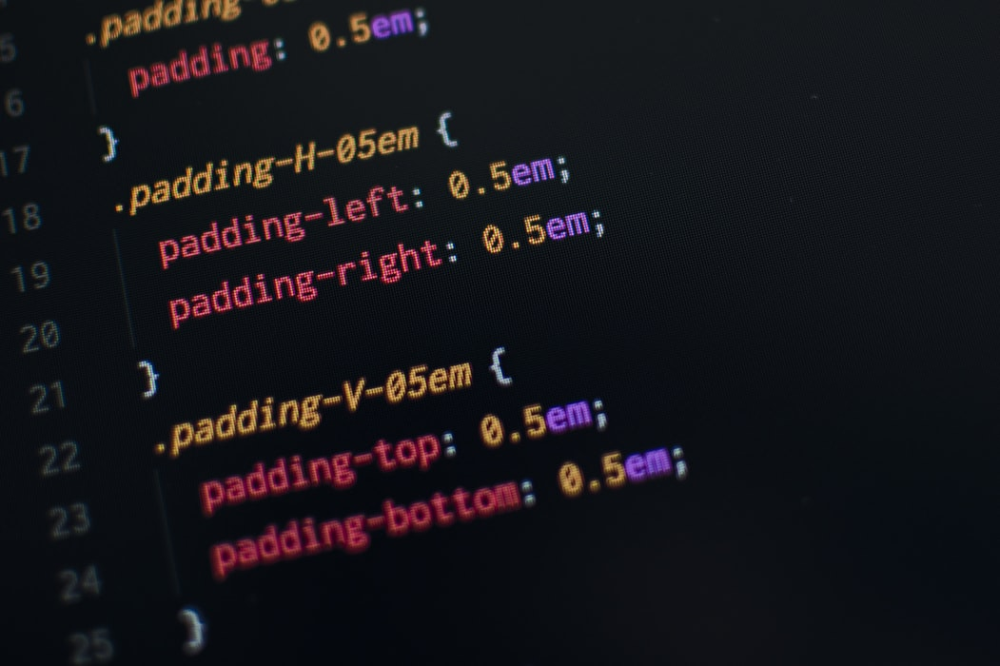

CSS is a language that describes the style of an HTML document. CSS describes how HTML elements should be displayed. This tutorial will teach you CSS from basic to advanced.
CSS selectors are used to "find" (or select) the HTML elements you want to style. We can divide CSS selectors into five categories: Simple selectors (select elements based on name, id, class) Combinator selectors (select elements based on a specific relationship between them) Pseudo-class selectors (select elements based on a certain state) Pseudo-elements selectors (select and style a part of an element) Attribute selectors (select elements based on an attribute or attribute value) This page will explain the CSS simple selectors.